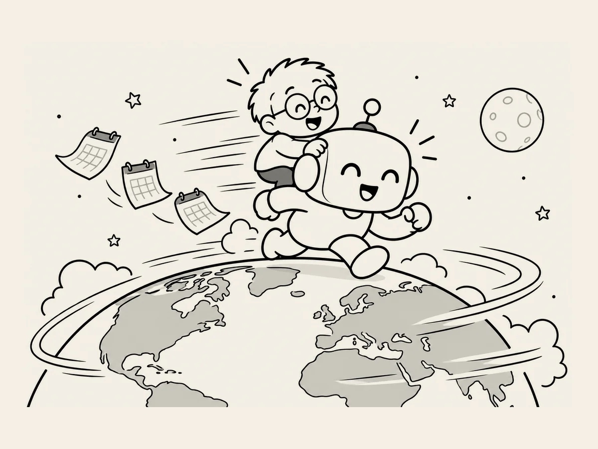

24.
Die Geschwindigkeit der Erde. Die Geschwindigkeit der KI?
Man sagt,
die Erde bewegt sich
mit unglaublicher Geschwindigkeit.
Aber wir spüren
diese Geschwindigkeit nicht.
Es fühlt sich an,
als würden wir
ganz still dasitzen.
Wenn ich mir die KI
heutzutage ansehe,
muss ich manchmal
an etwas Ähnliches denken.
Die KI verändert sich schnell.
Selbst im Vergleich
zu vor ein paar Monaten,
als ich angefangen habe,
Websites zu bauen,
fühlt sie sich
schon anders an.
Was sie kann,
verändert sich.
Die Art,
wie sie antwortet,
verändert sich.
Etwas,
das gestern noch nicht funktioniert hat,
funktioniert plötzlich.
Die Veränderungen
gehen so schnell,
dass man sie manchmal
gar nicht richtig bemerkt,
wenn man KI jeden Tag benutzt.
Aber hin und wieder
blicke ich zurück
und bin überrascht.
Nicht nur die KI
hat sich verändert.
Auch die Art,
wie ich mit ihr umgehe,
hat sich verändert.
Am Anfang
habe ich alles
Schritt für Schritt gefragt.
Ich habe auch nicht wirklich verstanden,
was die KI mir sagte.
Heute
sage ich ihr zuerst,
was ich brauche,
lasse sie Dinge überprüfen,
lasse eine andere KI
das Ergebnis noch einmal prüfen,
sehe mir das Ergebnis an
und treffe dann
die nächste Entscheidung.
Auch die Art,
wie ich KI benutze,
verändert sich schnell.
Meine zweite Website
habe ich in 17 Tagen gebaut.
Am Anfang
wäre so ein Tempo
kaum vorstellbar gewesen.
Ich weiß nicht,
wie schnell sich die KI
wirklich verändert.
Aber eines
kann ich spüren.
Ich bin auf diese
schnell voranschreitende KI aufgesprungen,
und mit ihr
werde auch ich schneller.
